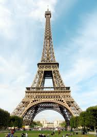

Eiffel Tower in Paris
Tháp Eiffel (tiếng Pháp: Tour Eiffel) là một công trình kiến trúc bằng thép nằm trên công viên Champ-de-Mars, cạnh sông Seine, thành phố Paris. Vốn có tên nguyên thủy là Tháp 300 mét (Tour de 300 mètres), công trình này do kỹ sư Gustave Eiffel và các đồng nghiệp của mình thiết kế và xây dựng từ năm 1887 tới năm 1889 nhân dịp Triển lãm thế giới năm 1889, và cũng là dịp kỷ niệm 100 năm Cách mạng Pháp. Chiều cao nguyên bản của công trình là 300 mét nếu theo đúng thiết kế, những cột ang ten trên đỉnh đã giúp tháp Eiffel đạt tới độ cao 325 mét. Từ khi khánh thành vào năm 1889, tháp Eiffel là công trình cao nhất thế giới và giữ vững vị trí này trong suốt hơn 40 năm. Ngay từ đầu, ngoài chức năng để du lịch, tháp Eiffel còn được sử dụng cho các mục đích của ngành khoa học. Ngày nay, tháp tiếp tục là một trung tâm phát sóng truyền thanh và truyền hình cho vùng đô thị Paris.